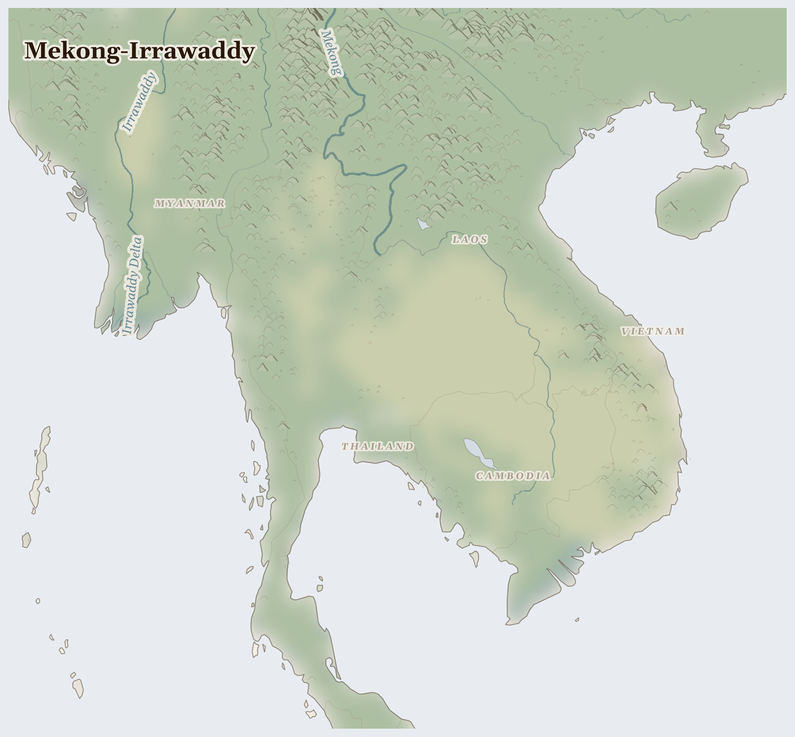

Mekong-Irrawaddy54M people
where Tibetan sediment built the Mekong delta that sixty million eat from, and dams now starve it
In the wet season, the Mekong pushes backward into Tonle Sap lake, flooding an area the size of a small country, and sixty million people eat because of it. Cambodian fishers on the lake set their nets by the current — when the river reverses, the fish come. Vietnamese rice farmers in the delta plant by the sediment — when the flood retreats, it leaves behind the silt that makes the soil.
Lives Lived Here
Before dawn on Tonle Sap, a Cambodian fisher checks his nets in the half-light. The lake is lower this year — the flood pulse came late and left early, the Chinese dams upstream holding back water for turbines in a dry month. His catch is smaller than his father's was, and his father's was smaller than his grandfather's. He sells what he has at the floating market to a trader who drives it to Phnom Penh, where a garment worker buys dried fish with part of the $183 she earned this month sewing fast fashion for H&M. She sends the rest home to her mother in Kampong Chhnang, who uses it to buy fertiliser — Syngenta brand, imported — for the rice paddy that no longer floods deeply enough to deposit its own nutrients.
In Samut Prakan, south of Bangkok, a Burmese migrant peels shrimp in a processing plant. He crossed the border two years ago after his village in Mon State was shelled. His passport is with his employer. The shrimp he processes will be frozen, boxed, and shipped to a supermarket in London or Atlanta, where it will cost less per kilo than the rice his wife grows back home — rice she irrigates from a tributary of the Mekong that runs lower each dry season because Laos sold the water rights to a Chinese dam company. She does not know where the water goes. He does not know where the shrimp goes. The supply chain connecting them passes through five countries and none of them can see it whole.
In Dak Lak province, in Vietnam's Central Highlands, a Degar farmer tends coffee seedlings on land his family has worked for generations — land that the state reclassified as a coffee estate concession in the 1990s, pushing his community to the margins of their own territory. His coffee will be bought by a Vietnamese trader at $1.80 a kilogram and sold to Nestle at $3.50. The Nestle instant coffee made from his beans retails at the equivalent of $25 a kilogram in a Tokyo convenience store. He has never tasted instant coffee. He cannot afford it.
Before dawn on Tonle Sap, a Cambodian fisher checks his nets in the half-light. The lake is lower this year — the flood pulse came late and left early, the Chinese dams upstream holding back water for turbines in a dry month. His catch is smaller than his father's was, and his father's was smaller than his grandfather's. He sells what he has at the floating market to a trader who drives it to Phnom Penh, where a garment worker buys dried fish with part of the $183 she earned this month sewing fast fashion for H&M. She sends the rest home to her mother in Kampong Chhnang, who uses it to buy fertiliser — Syngenta brand, imported — for the rice paddy that no longer floods deeply enough to deposit its own nutrients.

Reference map. Country boundaries and features are approximate.
What Presses
The weight on Mekong-Irrawaddy
{'location': 'Rakhine and Kachin States, Myanmar', 'narrative': 'In Rakhine State, the Rohingya who remain live under what the UN has called a textbook example of ethnic cleansing — movement restricted, livelihoods destroyed, subject to arbitrary detention and violence. In Kachin State, the jade mines of Hpakant produce an estimated $31 billion a year in stone that crosses the Chinese border, while the Kachin communities whose ancestral land sits above the jade watch their rivers run brown with mine tailings. Artisanal miners — many of them displaced people with no other income — die in landslides on waste heaps the size of mountains, built by military-linked companies that have no use for the bodies. Women near the mining camps face systematic sexual violence. The jade funds the Tatmadaw; the Tatmadaw burns the villages; the villagers flee to the mines. The circle does not break itself.'}
{'location': 'Tonle Sap and the Mekong Delta', 'narrative': "Tonle Sap lake is the largest freshwater fishery in the world, and it is dying by engineering. Each year the Mekong's flood pulse pushes water backward into the lake, expanding it from 2,500 to 16,000 square kilometres, creating the breeding habitat for fish that feed sixty million people across four countries. Eleven dams upstream — built by Chinese state enterprises (CWE, POWERCHINA) to sell hydropower to Thailand's EGAT — now regulate when and whether that pulse arrives. The sediment that once replenished the Mekong Delta's rice paddies is trapped behind those dams. The delta is sinking at rates of 1-3 centimetres a year. Salt water is pushing further inland each dry season. Vietnamese rice farmers in Can Tho and An Giang provinces watch the soil change beneath their feet and do not know that the cause is a turbine contract signed in Vientiane."}
{'location': 'Thai Fishing Fleet and Processing Plants', 'narrative': "Thailand is the world's third-largest seafood exporter. The boats that catch the fish and the plants that process the shrimp run on migrant labour from Myanmar and Cambodia — workers recruited with promises, transported across borders, and held. The International Labour Organization documented men kept at sea for years, beaten, unpaid, their passports locked in the captain's cabin. In Samut Prakan's processing plants, workers stand in antibiotic-dosed water for ten-hour shifts, peeling shrimp that will be sold frozen to Walmart, Costco, and Tesco. Thailand passed anti-trafficking legislation under EU pressure in 2015; the boats still sail, the plants still run, and the workers are still there — because the shrimp is still cheap, and cheap shrimp requires cheap hands."}
Ten resource streams flow out of Southeast Asia — jade, shrimp, sand, garments, coffee, bauxite, nickel, bananas, timber, hydropower — worth tens of billions at their destination markets. What does not come back is the sediment, trapped behind dams that sell electricity to countries that did not lose a river. What does not come back is the labour, consumed in processing plants and fishing boats and garment factories at rates the human body was not designed to sustain. What does not come back is the water, redirected from rice paddies to turbines by contracts signed in languages the farmers downstream do not speak. 2,315 killed (3 months); 3.6M displaced (total); jade, seafood and shrimp (harvested under coerced labor), riverine sand leaving; precipitation 31% of normal; 2,275 fires (7 days).
This Week
Myanmar: Insecurity Insight identified at least 1,873 incidents of violence against or obstruction of healthcare in Myanmar since the military coup on 1 February 2021 — hospitals shelled, ambulances seized, medics arrested for treating the wounded.
Myanmar: WHO reports that Myanmar's humanitarian crisis has continued to deepen due to intensifying conflict, recurrent natural disasters, and steady economic collapse. In the first half of 2025, Myanmar ranked second globally for conflict intensity.
Vietnam: The IFRC has allocated CHF 225,285 for anticipatory actions to reduce and mitigate the impact of heatwave in Vietnam — early warning that the dry season will press harder this year on communities already stressed by declining Mekong water levels.
Thailand: OCHA regional mapping of humanitarian working groups across Asia and the Pacific, documenting the coordination architecture that responds when governments cannot or will not.
The river still reverses. Each June, the Mekong pushes backward into Tonle Sap, and the lake fills, and the fish come. It has done this for longer than any dam has stood. The question is not whether the river remembers. The question is whether we will let it.
For Prayer
For the 3.6 million people displaced from their homes — especially in Myanmar, where the crisis is most acute. For safety on the road and welcome at the journey's end.
For communities enduring armed conflict between Myanmar Military and Armed Forces of the Philippines across Southeast Asia — 2,000 killed in the past three months. This week in Myanmar: Human Rights Council Sixty-first session 23 February–2 April 2026 Agenda item 4 Human rights situations that require the Council's attention Summary Five years after launching a military coup against a democratically elected government, the Myanmar.... For protection of civilians and for those who have lost loved ones.
Especially for Myanmar, facing the most severe convergence of crises in this region. This week in Myanmar: Insecurity Insight identified at least 1873 incidents of violence against or obstruction of health care in Myanmar since the military coup on 01 February 2021 and 31 January 2026.. For those making impossible decisions about whether to stay or flee, and for those who cannot choose.
For the helpers in Southeast Asia — for their safety, their courage, and their capacity to reach those most in need.
For every act of resistance and care in Southeast Asia — communities sharing food, farmers saving seed, neighbours sheltering neighbours. That these small acts of defiance outlast the crisis.
Out of the depths have I cried to you, O Lord; Lord, hear my voice; let your ears consider well the voice of my supplication.
Most merciful God, who by the death and resurrection of your Son Jesus Christ delivered and saved the world: grant that by faith in him who suffered on the cross we may triumph in the power of his victory; through Jesus Christ your Son our Lord, who is alive and reigns with you, in the unity of the Holy Spirit, one God, now and for ever.
Amen.
Seeds of Hope
In Myanmar, resistance forces — the People's Defence Forces and ethnic armed organisations — have retaken territory from the Tatmadaw across Shan, Karenni, and Chin states, organising parallel governance structures that provide healthcare and education where the military state has collapsed.
For Reflection
What would you risk for peace if you lived there?
What weapons in this conflict were manufactured in your country?
Looking Ahead
- Myanmar's civil war shows no trajectory toward resolution.
- The Tatmadaw has lost territory to resistance forces in Shan and Karenni states but retains control of jade-producing areas in Kachin and population centres in the central dry zone.
- WHO reports that Myanmar ranked second globally for conflict intensity in the first half of 2025, and the humanitarian crisis continues to deepen with steady economic collapse alongside recurrent natural disasters.
- Mekong dry season January-May -- watch the Chiang Saen gauge for whether Chinese dam releases from the Jinghong cascade are sufficient to maintain downstream flow for Tonle Sap fisheries
- Myanmar dry season offensive -- Tatmadaw typically intensifies operations during dry months when road networks become passable; jade mining in Kachin ramps up simultaneously
- Vietnam's Mekong Delta rice harvest April-May -- saltwater intrusion is worst in the dry season; any failure affects global rice prices and 18 million people's food security
Carry This
What to bring with you from this briefing
Take Action
Organizations working at the nodes this briefing traces
Intergovernmental organization monitoring the Mekong River's hydrology, fishery, and sediment flows across Laos, Thailand, Cambodia, and Vietnam. Publishes data on dam impacts, fish migration disruption, and seasonal flow alterations from upstream Chinese dams.
Monitors the Mekong fishery the briefing traces — where 11 mainstream dams block fish migration routes that 60 million people depend on for protein, and sediment trapping starves the Vietnamese delta of the material that sustains rice agriculture.
Coalition of Thai NGOs supporting migrant workers from Myanmar, Cambodia, and Laos in Thailand's fishing, construction, and agriculture sectors. Documents labor trafficking, wage theft, and immigration detention conditions.
Represents the labor migration cost-bearers the briefing identifies — Myanmar and Cambodian workers in Thai seafood processing plants and rubber plantations who face debt bondage and passport confiscation, connecting regional displacement to supply chains that reach European and American supermarkets.
Research organization tracking illegal logging, land conversion for oil palm and rubber, and carbon credit schemes across mainland and insular Southeast Asia. Documents supply chains from deforestation frontier to international commodity markets.
Traces the oil palm and rubber supply chains the briefing documents — where forest clearance in Kalimantan and Sumatra for palm oil, and rubber expansion in Laos and Cambodia, displace Indigenous communities and destroy carbon sinks, connecting plantation commodity flows to European biofuel mandates.
Campaigns against destructive dam projects on the Mekong and its tributaries, supporting affected communities' right to free-flowing rivers. Documents displacement, fishery loss, and downstream impacts of the Lancang cascade and Lao mainstream dams.
Campaigns at the hydropower nodes the briefing identifies — where the Xayaburi and Don Sahong dams in Laos and the Lancang cascade in China restructure the Mekong's flow regime, destroying the flood-pulse fishery that is Cambodia's primary protein source and Vietnam's delta agriculture.
Bangkok-based policy research organization analyzing trade agreements, land grabs, and development finance impacts across Southeast Asia. Documents how infrastructure megaprojects and special economic zones dispossess rural communities.
Analyzes the political economy connecting the briefing's flows — how Belt and Road infrastructure, special economic zones in Laos and Myanmar, and trade agreements restructure land access and labor migration patterns, linking geopolitical investment to community displacement.
Intergovernmental body coordinating typhoon warning and disaster risk reduction across 14 member countries. Publishes tropical cyclone track data, impact assessments, and vulnerability analyses for coastal communities.
Tracks the typhoon hazard the briefing documents — where intensifying cyclones destroy fishing infrastructure, flood rice paddies with saltwater, and trigger urban flooding in Manila and Ho Chi Minh City, connecting atmospheric warming to cascading livelihood destruction across the region's coastal populations.
Generated 2026-03-18